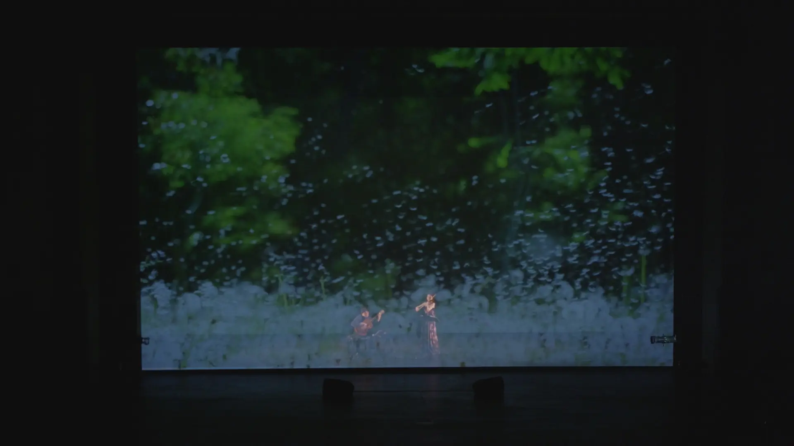
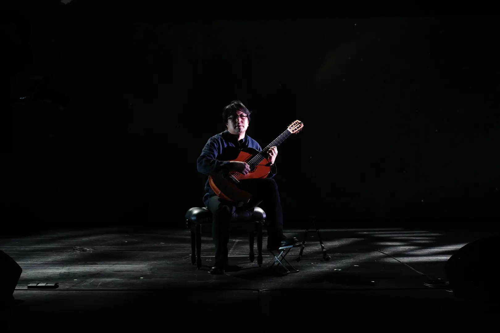
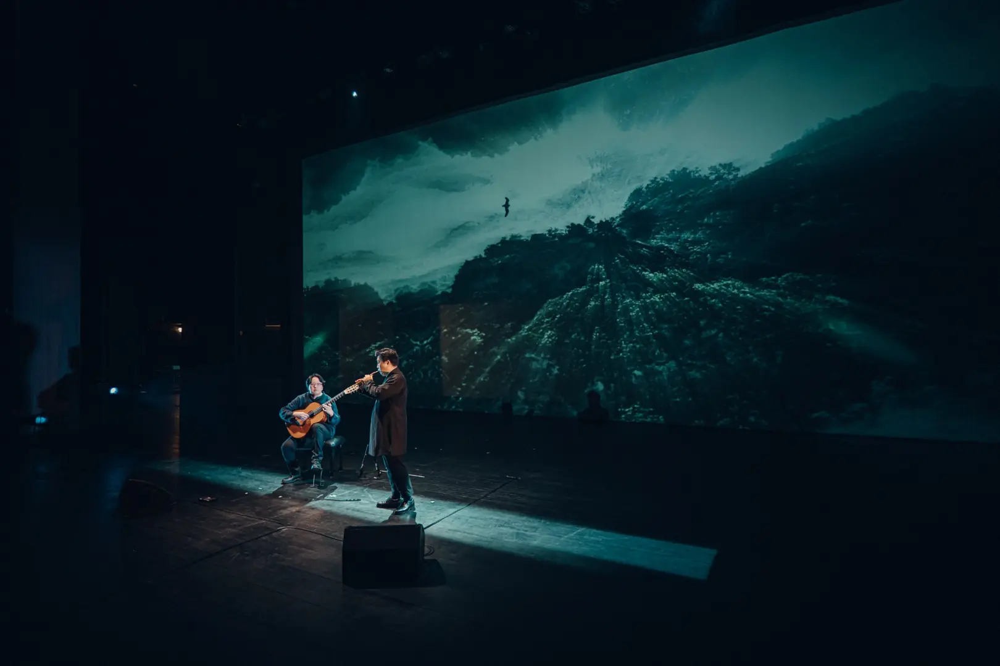
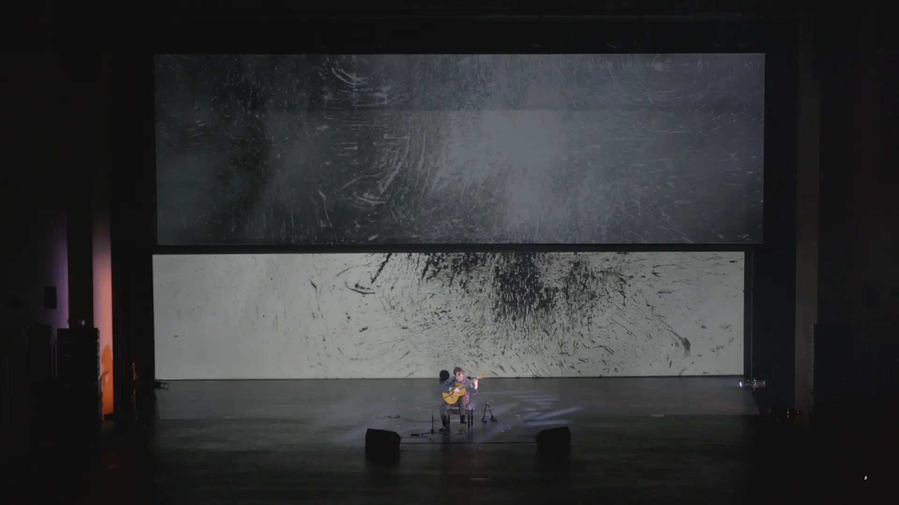

Fischerinsel Archive
2025 Incheon
/
2025 SAC
   
FROM HERE TO EVERYWHERE
In Choi Guitar Recital
인천 중구문화회관 · 2025-10-25
Watch Full Performance
Featured Highlight
Full Performance
Tracks · Program
숲
숲에 들어설 때마다…